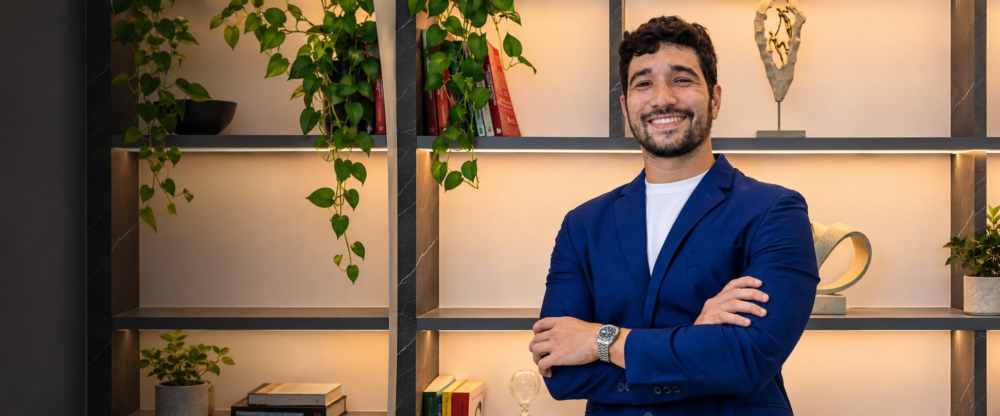

Frente 01
Planejamento comercial e definição de metas
Metas construídas a partir dos números reais da empresa, desdobradas por período, canal e vendedor.

Metas claras, time organizado e um processo de venda que se repete todo mês.
Se alguma dessas situações acontece aí, o problema não é falta de esforço do time. É falta de estrutura.
As metas são definidas no “achismo” e ninguém sabe se estão no ritmo.
Cada vendedor vende do seu jeito e o resultado depende de quem atende.
Os leads chegam por vários canais e muitos se perdem no caminho.
A disputa é sempre por preço porque o cliente não enxerga diferença.
Descontos e condições são dados sem regra, corroendo a margem.
O dono ainda precisa entrar em toda negociação para a venda sair.
A boa notícia: tudo isso tem solução, e começa por organizar a casa.
Veja o que a Way entrega

A Way Group nasceu para levar método a empresas que crescem rápido, mas ainda dependem do improviso. Nosso time senta à mesa com você, entende o seu negócio e constrói junto um comercial que funciona no dia a dia.
Cada frente resolve uma parte do problema. Juntas, transformam vendas em um processo previsível.
Metas construídas a partir dos números reais da empresa, desdobradas por período, canal e vendedor.
Quem prospecta, quem atende, quem fecha e quem acompanha: cada pessoa sabe o que entregar.
Loja, WhatsApp, redes, representantes ou indicação: cada canal com fluxo, responsável e indicador.
Entendemos onde você ganha e onde perde para sair da guerra de preço com argumentos de valor.
Roteiros, etapas do funil e respostas às principais objeções para que todo cliente tenha a mesma experiência.
Descontos, prazos, condições e alçadas definidos com clareza para proteger a margem da empresa.
Se você se reconhece em pelo menos um destes cenários, a resposta é sim.
Que já vendem, mas sentem que o faturamento oscila e não sabem exatamente por quê.
Que vão contratar vendedores, abrir canais ou unidades e precisam de um processo que escale.
Que ainda estão no centro de toda venda e querem um time que funcione sem depender deles.
Se a sua pergunta não estiver aqui, chame a gente no WhatsApp. Respondemos rapidinho.
Tirar dúvida no WhatsAppOs primeiros ganhos costumam aparecer assim que metas e rotinas entram em prática, porque o time passa a saber o que fazer e o gestor passa a enxergar os números. O prazo exato depende do ponto de partida da empresa, que mapeamos no diagnóstico.
Sim. O método é o mesmo, mas o plano é construído para a sua realidade: varejo, serviços, indústria, B2B ou B2C. Partimos dos seus números e do seu jeito de vender.
Não. Muitas empresas começam com um ou dois vendedores, ou com o próprio dono vendendo. Estruturar cedo é justamente o que permite crescer o time sem perder o controle.
Ajudamos a implantar. Treinamos o time, colocamos roteiros e indicadores em prática e acompanhamos os resultados para ajustar o que for preciso.
Sim. Depois do diagnóstico indicamos por onde começar. Algumas empresas precisam primeiro de metas e políticas; outras, de padronização do atendimento. Montamos o escopo junto com você.
Converse com um especialista da Way Group e receba um primeiro direcionamento para o comercial da sua empresa.